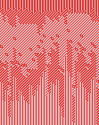
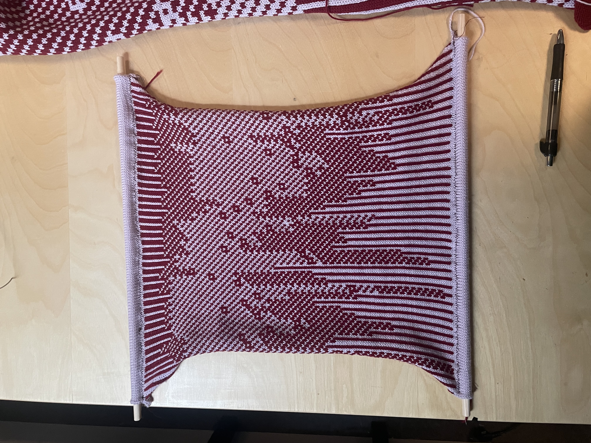

The machine-knitted piece “uf.predictionMap” represents fertility and predicted ovulation data, which a menstruation app has computed from User 59899’s inputed data.



“User 59899” is a collection and exploration of what it means to physicalize the different layers of obscurity of intimate data. Nadia Campo Woytuk & Nicolas Harrand have used Nadia’s own data to create three striking wall hangings which explore the permanence of this disembodied data and the power individuals have over its creation and destruction. The artworks represent Nadia’s (User 59899’s) menstrual cycle data from the past three years.
The hand-printed calendar “uf.entryMap” represents User 59899’s temperature oscillations. Each block corresponds to a daily temperature measurement, represented with a set of 4 different stamps and 3 different colors. Bigger shapes and warmer colors represent higher values.
The machine-knitted piece “uf.predictionMap” represents fertility and predicted ovulation data, which a menstruation app has computed from User 59899’s inputed data.
The final machine-embroidered artwork “sessions.city, sessions.time” represents data which an app can pervasively collect on a user: the time of usage and location of User 59899. Each symbol represents a different city, and the red circles indicate the time at which the app was first opened.